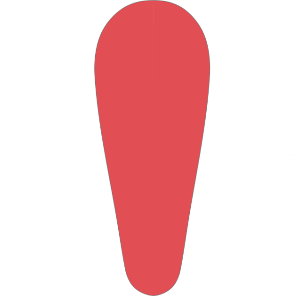

Kinis Co
Barefoot Training Footwear
Step One: Logo
I was tasked first with creating a new logo to replace the one they already had:

I originally assumed it was meant to resemble a foot, which made sense, but I was later informed it was meant to depict a calf muscle. Regardless, they wanted to stick with the theme of kinesiology/movement/feet.
My first go at it:
This logo features a "K" shape made from the natural outline of a foot, and uses the desired red color on the toe prints for accentuation.
I was informed that this logo was too limiting, as the company hopes to eventually expand their product line into full body apparel.
We settled on a more abstract logo, depicting a human figure in motion:
Step Two: Wordmark
As I was developing the logo, I was also experimenting with different fonts that would make for a good pairing. I liked the look of the font "Arista Pro" and I used it as the basis for my custom wordmark:
The thick stroke matches the stroke of the human figure in the logo, and the dark color contrasts quite nicely with the red and white. The rounded edges give it an approachable feel, which ties in with Kinis' "Be Human" tagline.
Here they are together: